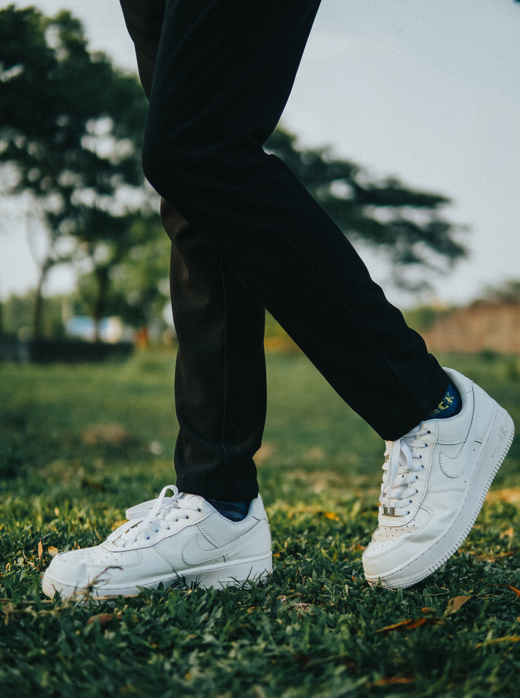
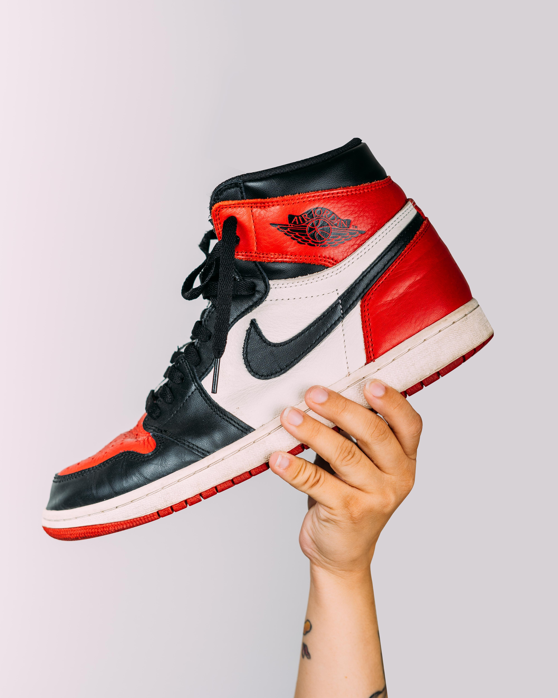
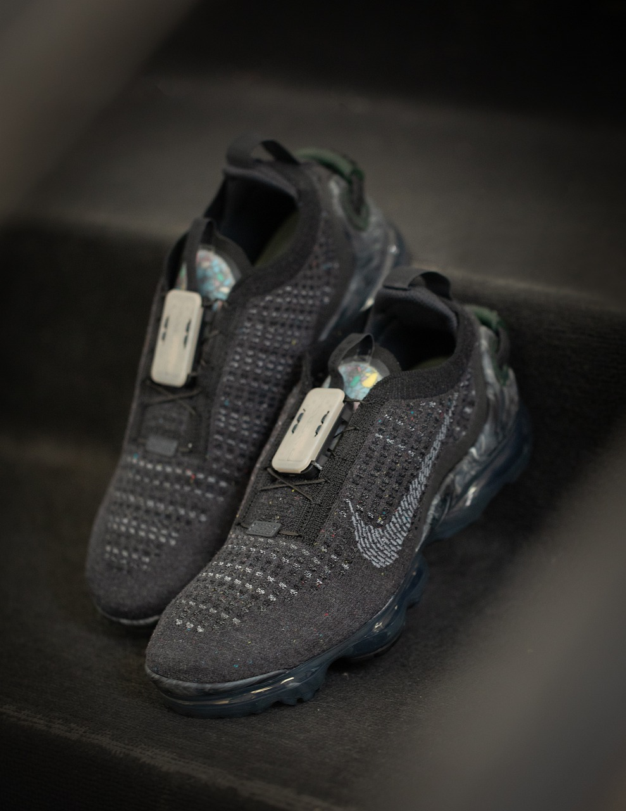

January 25, 1964 – Founded in Eugene, Oregon, by Phil Knight who was a track runner at the University of Oregon and Bill Bowerman who was Knight’s coach
1971 – Bill Bowerman experiments and creates the waffle pattern for the sole of the shoes.
1971 – The creation of the Nike swoosh.
1972 – Nike signs their first athlete to an endorsement deal. A Romanian tennis player.
1972 – Nike releases the Classic Cortez. This shoe was a big part of Nike’s foundation. It built upon the previous designs and combined to morph into a classic (like in the name hahaha!). Most models combine a leather and synthetic upper with a lightweight midsole with superb traction. The Cortez is the perfect shoe to wear around the house and be comfy in, or you could take it out and go on a hike wearing it. This is a must have.
1982 – The first release of the Air Force 1. It is a timeless silhouette that many people still love today. AF1’s are now offered in mid and high tops. They offer unmatched comfort. Additionally, they are a versatile shoe that many people want to have in their closet.
1984 – Nike signs Jordan to a shoe deal. The Jordan brand is born.
1985 – Jordan’s first sneaker is released. The Jordan 1. When it was first released people were stunned and amazed. The shoe turned heads. It was durable enough to play basketball in, but also stylish enough to wear out. After the release, everyone wanted to get their hands on a pair. Overtime, Nike has released many different versions of the Jordan 1, switching up the colors and making them mid/low tops. This sneaker has proven to last and even today remains as a critical shoe to have in any collection.
1987 – Tinker Hatfield released a masterpiece with the Air Max 1. It was the first shoe with a “window” into the sole. You can see the air bubble in the heel. It became an instant success and since it’s still very popular. The upper section has clean lines, creating a professional yet still sporty look. This shoe could be worn during almost any occasion, it is a must have.

1996 – Nike signs Tiger Woods.
2000 – Nike annnounces the “SB” (skateboarding) brand.
2002 – Nike acquires the surf brand Hurley.
2003 – Nike signs Lebron James and Kobe Bryant to shoe deals. Signature shoes later follow.
2004 – Nike purchases Converse for $309 million.
2004 – Nike SB signs its first rider and starts recruiting more.
2008 – Nike signs Derek Jeter.
2017 – Nike Air VaporMax is released. This is a different shoe than most of the others. It was building on technology that was seen in the Air Max 1 but expanded on it exponentially. The shoe features a midsole that is exclusively air pockets and translucent. It is lightweight, responsive, and sporty. Nike also uses flyknit on the upper which is a stitched upper that is extremely light. With that, they also had the ability to incorporate different colors/styles into the shoe. This shoe might not be the favorite of a lot of people, but with its many variations it can be a fun way to spice up an outfit.
Nike pushes boundaries and strives for greatness. The shoes they make show that. From basketball to skating and everything else, Nike creates shoes that will get the job done on a performance level while also making you look good while doing it.